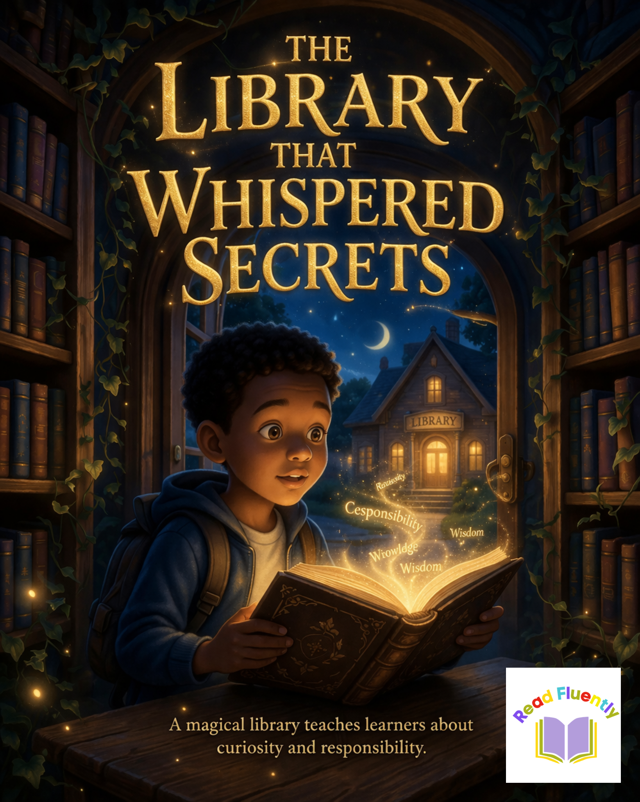

Your Answer
Ready to record your answer.

Listen to the story, then record your own answer to show what you understood.
Ready to record your answer.
What did Lebo learn about curiosity and responsibility?
Listen carefully, think about the message of the story, and then record your answer.